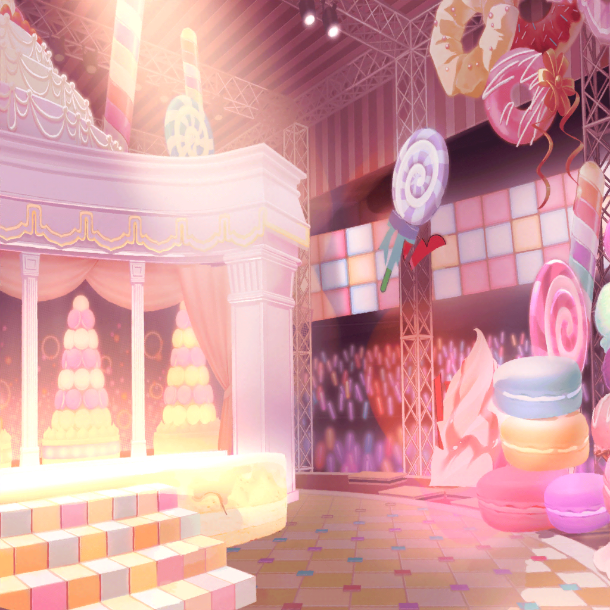

数日後
駅前
彩
（演奏は少しずつ上達してきたけど……
もっと、私にできることはないかな）

彩
あ……あ……
彩
（声が出ない……っ！）
彩
（もう、何もしないで後悔するようなことはしたくない。
後悔しないためには……そうだ！）
 芸能事務所 会議室
芸能事務所 会議室
彩
おはようございますっ！ あの、ちょっといいですか？
スタッフ
彩さん。いいですよ。どうしましたか？
彩
あの……Pastel＊Palettesのメンバーで、
ライブイベントのチケットを手売りしたいと思って
スタッフ
手売りですか……
彩
お披露目イベントで、私達がもうダメだって思っている人達が
たくさんいると思うんです
彩
だから、再スタートした私達をお客さんに
もう一度知ってもらう必要があるんじゃないかって……
スタッフ
お気持ちはわかりますが……
直接ファンと接触するのは、危険もありますよ
彩
もし、危険だって判断すればすぐにやめます。
だから……お願いします！
やる前から、諦めたりしたくないんです！

芸能事務所 レッスンスタジオ
彩
みんな、おはよう！
……今日はみんなにちょっと相談があるんだ
イヴ
おおっ、何でしょう？
彩
今日ね、スタッフさんにお願いして、今度出るライブイベントの
チケットをもらってきたの！
これを、私達が直接お客さんに手売りしたらどうかなと思って
日菜
へえ？ でも、なんで？
チケットならネットとかでも買えるでしょ？
彩
私達、あの日以来ずっとスタジオで練習だけでしょ？
だから、もっとお客さんの顔を見て、直接お話しして……
私達の存在をもう一度知ってもらう必要があるんじゃないかなって
彩
再スタートの意味でも、お客さんに私達の姿を
見て欲しいっていうか……
麻弥
なるほど。
そういえば、バンドでもチケットを手売りしている
人たちがいました
イヴ
私達を知ってもらう……素敵ですね！
私も、お客さん達に会いたいです！
日菜
うん、いいんじゃないかな？
あたしの興味は今、『他人』に向いてるからね。
お客さんも、『他人』だし
彩
みんな、ありがとうっ！
それじゃあ、今日からはじめてみよう！
 駅前
駅前
イヴ
ここでやるんですか？
彩
うん。ここは事務所が運営している劇場だから、
ここの前なら好きに使っていいって言ってもらえたんだ
麻弥
彩さん、そこまで段取りをつけてくれてたんですね。
ありがとうございますっ
彩
……すー、はー。すー、はー……
彩
みなさ〜ん！！ 今から、Pastel＊Palettesが出演する
ライブのチケットを販売しまーす！
千聖
（……あれは……彩ちゃん達？）
通行人
ねえねえ、あれってパスパレのメンバーじゃない？
通行人
パスパレって、あのライブで口パクがバレたグループ？
通行人
そうそう、歌も演奏も全部嘘だったのがバレたっていう、噂の……まだ活動してたんだ……もう解散したのかと思ってたよ
千聖
（……チケットの手売り……？
本当にめげない子ね）
彩
Pastel＊Palettes、よろしくお願いしまーっす♪
１時間後
麻弥
お願いしまーす！
イヴ
お願いしまーす！！
１時間後
芸能事務所 会議室
日菜
ふわ〜あ……疲れたあ〜……全然売れないもんだねえ
イヴ
配っている時に、通りがかった人に
『まだやってたんだ』と言われました。
『解散したと思った』とも
イヴ
悲しい、です。みんなで一生懸命練習して、がんばって、
ライブに出ることにもなったのに……
お客さんたちは、私達のこと、忘れているんです
麻弥
私たちは今まで、メディアへの露出も控えていましたからね。
存在を忘れられてしまうのは……仕方ないことなのかもしれません
彩
忘れられちゃってたなら、思い出してもらえばいいんだよ。
実際、そのお客さん達は今、私達の存在を
もう一度知ってくれたんだし
イヴ
……アヤさんは、悲しくないのですか？
忘れられていたこと
彩
……もちろん、悲しいよ
彩
でもね、私は、今の自分にできることは全部やりたいんだ。
一時的な気持ちに押しつぶされて、諦めて、後悔したりしたくない
彩
私は、どんなことが起こったとしても、
もう一度ステージに立ちたいから
彩
……さ、そろそろレッスンの時間だね！
よーっし、がんばろー！
 芸能事務所 廊下
芸能事務所 廊下
千聖
……